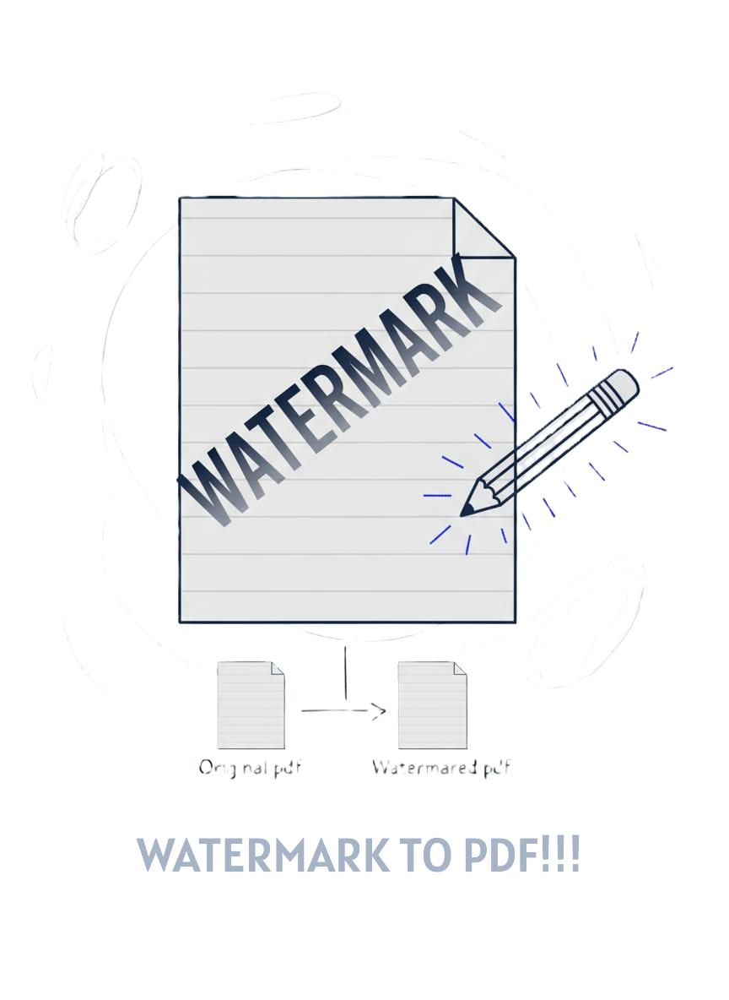

Watermark PDF
Add a translucent text watermark to every page client‑side. Your file never leaves your device.

Watermark Your PDFs Brand Protection Made Simple
Need to mark documents as confidential, add copyright protection, or brand your PDFs? Our Watermark tool adds customizable text overlays to every page of your PDF. Choose the text, color, opacity, position, and sizeall processed entirely in your browser with complete privacy.
How It Works
The Watermark tool uses pdf-lib to read your PDF, then draws your custom text on every page at the position, size, color, and opacity you specify. All processing happens locally in your browser using JavaScript. No server uploads, no data collection. You preview the watermark on a canvas, adjust settings, and download the watermarked PDF.
Think of it like stamping every page of a physical document with a translucent "CONFIDENTIAL" or "DRAFT" marking. The watermark appears on all pages but doesn't obscure the underlying content, making it perfect for status indicators, copyright notices, or branding.
Why Use This Tool
- Document status - Mark files as DRAFT, CONFIDENTIAL, COPY, or FOR REVIEW
- Copyright protection - Add Company Name or author attribution
- Brand PDFs - Include company name or logo text on distributed documents
- Prevent misuse - Discourage unauthorized copying or distribution
- Professional appearance - Add subtle branding to proposals and reports
Complete Privacy
Your PDF never leaves your computer. All watermarking happens directly in your browser using pdf-lib. No files are uploaded to any server. This is essential when watermarking sensitive documents like contracts, financial records, legal briefs, or confidential reports.
100% client-side processing - everything stays on your device
No server uploads - your document never goes online
No data logging - we never see your file contents or watermark text
Works offline - watermark PDFs even without internet connection
Customization Options
- Text: Enter any text"CONFIDENTIAL", " 2025 YourCo", "DRAFT", etc.
- Opacity: Set from 0.1 (nearly invisible) to 1.0 (fully opaque). 0.2-0.3 works well for most cases
- Color: Choose any color using the color pickerred for CONFIDENTIAL, gray for DRAFT
- Placement: Diagonal (default), center, corners, or custom position by clicking the preview
- Size: Auto-fit (scales to page), Small, Medium, or Large
- Preview: See exactly how the watermark looks before applying it
Watermark Tips
Adding a watermark is straightforward, but getting it to look professional takes a bit of finesse. Here's how to make your watermarks stand out without overwhelming the document:
- Start Subtle with Opacity: Use opacity 0.2-0.3 for professional-looking watermarks that don't interfere with readability. Too high (0.7+) and your watermark becomes a distraction; too low (under 0.15) and it's practically invisible. The sweet spot is translucent but clearly visible when you're looking for it.
- Diagonal is the Industry Standard: The default diagonal placement isn't just for looks—it's harder to crop out than corner or center watermarks. If someone tries to remove a diagonal watermark by cropping, they'd lose significant content from the page. That's why most legal documents and official PDFs use diagonal orientation.
- ALL CAPS for Visibility: Watermarks like "CONFIDENTIAL" or "DRAFT" are way more visible and authoritative in capital letters. Lowercase text can blend in too much with the document content, especially at low opacities. ALL CAPS = instant recognition.
- Always Test on the Preview: Before applying the watermark to all pages, check the canvas preview carefully. Make sure the text is readable, positioned correctly, and doesn't obscure critical content. Zoom in if needed—what looks fine at thumbnail size might block important text when viewed full-screen.
- Color Communicates Meaning: Red signals urgency or confidentiality (perfect for "CONFIDENTIAL" or "DO NOT DISTRIBUTE"). Gray works great for status indicators like "DRAFT" or "COPY"—it's visible but neutral. Blue conveys official or formal status, like company branding or copyright notices. Choose color intentionally.
- Keep Watermarks Short: Stick to 1-3 words maximum. "CONFIDENTIAL" works perfectly. "This document contains confidential information and should not be shared" becomes a cluttered mess. Long text either gets too small to read or dominates the page. Brevity wins.
💼 Common Watermark Use Cases
Watermarks serve different purposes depending on what you're trying to achieve. Here are the most common scenarios and how to approach them:
Draft Documents: Use "DRAFT" in gray at 0.25 opacity, diagonal placement. This clearly indicates the document isn't final without screaming for attention. Perfect for circulating proposals, reports, or contracts for internal review before finalizing.
Confidential Materials: Use "CONFIDENTIAL" in red at 0.3 opacity, diagonal. The red color immediately signals sensitive content, reminding anyone who opens the file to handle it carefully. Great for financial data, HR documents, or strategic business plans.
Copyright Protection: Use "© 2025 Your Company Name" in gray or blue at 0.2 opacity. This subtle but clear attribution discourages unauthorized redistribution and makes it obvious who owns the content. Useful for white papers, guides, or any content you're distributing publicly.
Review Copies: Use "FOR REVIEW ONLY" or "COPY" in gray at 0.25 opacity. This indicates the PDF is meant for feedback, not final distribution, and shouldn't be treated as the official version.
Pro tip: If you're watermarking multiple documents for the same purpose (like marking 20 reports as confidential), note your preferred settings (text, color, opacity, position) so you can apply them consistently across all files. Consistency makes your documents look more professional and organized.
Quick Guide
- Upload your PDF: Click or drag your file into the upload area
- Enter watermark text: Type your desired text (e.g., "CONFIDENTIAL")
- Set opacity: Adjust 0.1-1.0 (0.2 recommended for subtle effect)
- Choose color: Use the color picker to select watermark color
- Select placement: Pick diagonal, center, corner, or custom position
- Preview: Check the canvas to see how it looks
- Apply watermark: Click the button to process all pages
- Download: Save your watermarked PDF!
Frequently Asked Questions
Can I add different watermarks to different pages?
Not currentlythis tool applies the same watermark to all pages. If you need page-specific watermarks, you'd need to split the PDF, watermark each section separately, then merge them back together.
Does the watermark affect PDF quality?
No. The watermark is added as a text layer on top of existing content. The original PDF content (text, images, vectors) remains unchanged with no quality loss.
Can someone remove the watermark?
Technically, yeswatermarks are not encryption or security features. They're visual deterrents and indicators. For true document protection, use password protection or encryption instead.
Can I watermark password-protected PDFs?
If the PDF requires a password to open, you'll need to unlock it first using our Unlock tool. Once unlocked, you can add watermarks, then re-protect it with our Password Protect tool if needed.
What's the best opacity setting?
For most professional documents, 0.2-0.3 works wellvisible enough to read but subtle enough not to distract. For very light backgrounds use 0.3-0.4; for dark backgrounds try 0.5-0.6 with white or light-colored text.
Can I use special characters or emojis?
Standard text and common symbols (, , ) work reliably. Emoji support depends on the PDF viewer and font embedding. For maximum compatibility, stick to alphanumeric text and standard symbols.